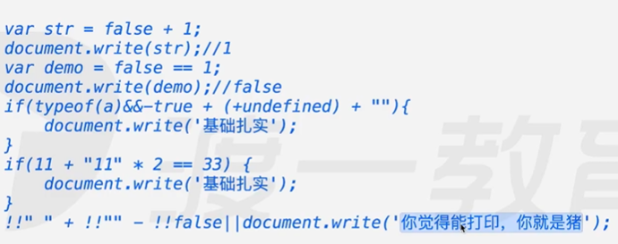

一、显示类型转换
1.1 Number
若字符串都是数字，则直接转换成数字
若字符串中有字母，转换成NaN
var num = Number("123"); |
1.2 parseInt
- 用法一：数据转换
小数：转换成整型，例：123.3
字符串：数转换成数字,其他的都是NaN，例：”123”，输出123，’123a’，输出123
- 用法二：进制转换
parseInt(num,16)基底(2~36),将num以16进制为基底转换成10进制
1.3 parseFloat
与parseInt相似,从数字位一直到非数字位截至,例：123.3a，输出123.3
无基底
1.4 String
- 转换成字符串
1.5 Boolean
- 转换成布尔类型
1.6 toString
- demo.toString()
- 将demo里的内容转换成字符串
- 但是有两个不能用,会报错：undefined,null
- demo.toString(radix):以10进制位基底准换成radix进制
二、隐式类型转换
2.1 isNaN(“abc”)
- 判断括号内部的内容是不是NaN
- 内部转换：
Number("abc") --> NaN
2.2 ++/–、+/-(一元正负)
var a = +"abc"; |
- 原因：即使转换不成数字，但是类型也是数字类型
2.3 % - * /
var a = 1*"1"; |
- 用Number
2.4 +（加号）
var a = 1 + "a"; |
有一个是字符串，结果就是字符串
除字符串外，隐式类型转换成数字 例：1 + false，Number(false)转换成0
2.5 && || !
var a = 1 && 0; |
前面讲过，转化成boolean类型，计算表达式的值，类型取决于表达式的值
!运算符后边转换成布尔类型
2.6 < > >= <=
var a = 1 > "a"; |
字符串和数字相比较隐式类型转换成数字
字符串之间相比较没有隐式类型转化，比较时用ASCII码
2.7 == ！=
var a = 1 == true; |
'' == 0 true |
类型一样时： 比较两者的值
类型不一样时：
布尔类型：true -> 1,false -> 0
字符串类型：用Number转化
注意： 最终结果一定是布尔类型
2.8 特殊情况
系统定义，没有规则
NAN连自己都不等于，所以不等于任何东西
undefined > 0 false |
三、不发生类型转换
左右两侧长得一样才是true,NaN除外
绝对等于：===，例：1===1
绝对不等于：！==，例：1！==”1”
四、未定义的变量
通常变量使用前需要定义，如果未定义就是用会报错 not a defined
typeof(a);
- 输出：undefined
typeof(typeof(a));
输出：String
原因：typedef(a)打印出的值undefined是字符串类型
五、习题

“+” 非字符串：Number(false) -> 0 结果：1
“==” 布尔类型：Number(false) -> 0 结果：false
typeof(a) -> (字符串)”undefined”、-true -> (number)-1、+undefined -> (number)NaN、
&&前后两项转化成布尔类型都是true，所以可以打印略
true + false - false -> 1 + 0 - 0 ==1,转化成布尔类型时true,|| 运算符遇到对(true)的停止，所以不能输出